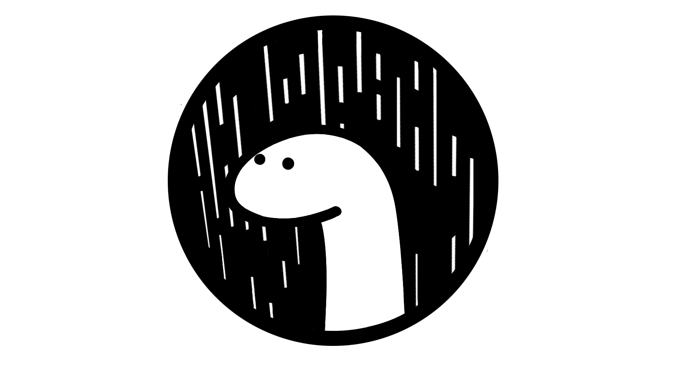

社内勉強会でDenoを発表しました

Denoとは§
JavaScriptおよびTypeScriptのセキュアなランタイム → V8を使用し、Rust(runtime部分)とTypeScript(std module部分)で書かれています。
スター数 60kという驚くべき関心の高さ（ちなみにNode.jsはスター数70kです）
ライアン・ダール自身、Node.jsとは全く別の新しいランタイムである、というのを繰り返しIssuesの回答に書いていて、npmライブラリの資産を使い回す意思はないというのが伝わってきます。